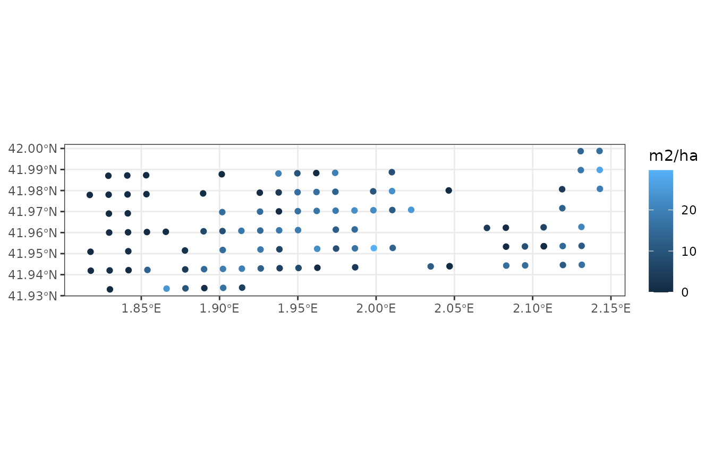
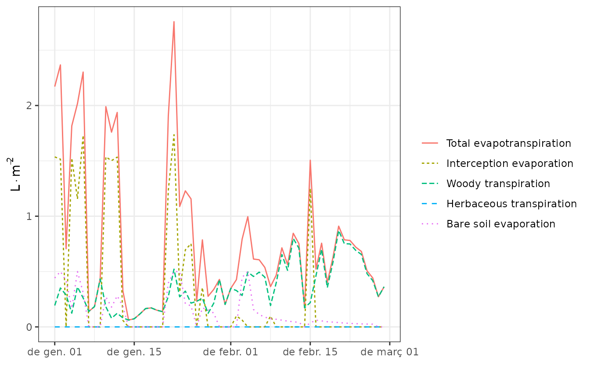
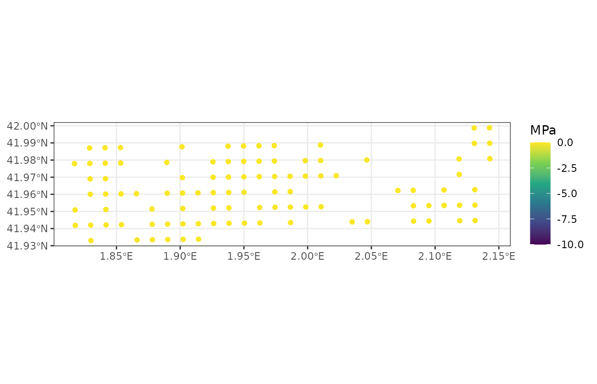

Spatially-uncoupled simulations
Miquel De Caceres
2024-05-08
SpatiallyUncoupledSimulations.RmdAim
The aim of this vignette is to illustrate how to use
medfateland (v. 2.3.0) to carry out simulations of
forest function and dynamics on a set of spatial units, without taking
into account spatial processes. This is done using functions
spwb_spatial(), growth_spatial() and
fordyn_spatial(); which are counterparts of functions
spwb(), growth() and fordyn() in
package medfate. As an example, we will use function
spwb_spatial(), but the other two functions would be used
similarly.
Preparation
Input structures
The fundamental input structure in medfateland is an object of class sf, i.e. a simple feature collection where geometries (normally points) are described with attributes. In the case of medfateland, spatial attributes correspond to model inputs for each of the spatial units represented. We begin by loading an example data set of 100 forest stands distributed on points in the landscape:
data("example_ifn")
example_ifn## Simple feature collection with 100 features and 7 fields
## Geometry type: POINT
## Dimension: XY
## Bounding box: xmin: 1.817095 ymin: 41.93301 xmax: 2.142956 ymax: 41.99881
## Geodetic CRS: WGS 84
## # A tibble: 100 × 8
## geom id elevation slope aspect land_cover_type soil
## * <POINT [°]> <chr> <dbl> <dbl> <dbl> <chr> <list>
## 1 (2.130641 41.99872) 081015_A1 680 7.73 281. wildland <df>
## 2 (2.142714 41.99881) 081016_A1 736 15.6 212. wildland <df>
## 3 (1.828998 41.98704) 081018_A1 532 17.6 291. wildland <df>
## 4 (1.841068 41.98716) 081019_A1 581 4.79 174. wildland <df>
## 5 (1.853138 41.98728) 081020_A1 613 4.76 36.9 wildland <df>
## 6 (1.901418 41.98775) 081021_A1 617 10.6 253. wildland <df>
## 7 (1.937629 41.98809) 081022_A1 622 20.6 360 wildland <df>
## 8 (1.949699 41.9882) 081023_A1 687 14.4 324. wildland <df>
## 9 (1.96177 41.98831) 081024_A1 597 11.8 16.3 wildland <df>
## 10 (1.97384 41.98842) 081025_A1 577 14.6 348. wildland <df>
## # ℹ 90 more rows
## # ℹ 1 more variable: forest <list>Despite the geometries themselves (which have a coordinate reference system), the following columns are required:
-
ididentifiers of stands (e.g. forest inventory plot codes) -
elevation(in m),slope(in degrees),aspect(in degrees) describe the topography of the stands -
land_cover_typedescribes the land cover in each unit (values should be wildland or agriculture for spatially-uncoupled simulations). -
forestobjects of class forest (see package medfate) describing the structure and composition of forest stands -
soildescribes the soil of each forest stand, using either data frame of physical attributes or initialized objects of class soil (see package medfate).
Note that columns forest and soil contain
vectors of lists, where elements are either lists or data.frames. For
example, the forest corresponding to the first stand is:
example_ifn$forest[[3]]## $treeData
## IFNcode Species DBH Height N Z50 Z95
## 1 0243 Quercus pubescens 1.5 100 318.3099 647.0011 4510
##
## $shrubData
## IFNcode Species Height Cover Z50 Z95
## 1 0105 Quercus coccifera 40 1 647.0011 4510
## 2 0114 Salvia rosmarinus 70 3 203.0918 1000
## 3 3121 Rubus spp. 110 5 151.6395 684
## 4 7104 Dorycnium spp. 40 5 153.5119 695
##
## $herbCover
## [1] NA
##
## $herbHeight
## [1] NA
##
## attr(,"class")
## [1] "forest" "list"and the soil is:
example_ifn$soil[[3]]## widths clay sand om bd rfc
## 1 300 25.76667 37.90 2.73 1.406667 23.84454
## 2 700 27.30000 36.35 0.98 1.535000 31.63389
## 3 1000 27.70000 36.00 0.64 1.560000 53.90746
## 4 2000 27.70000 36.00 0.64 1.560000 97.50000Displaying maps of landscape properties
Using plot_variable() functions for spatial landscape
objects, we can draw maps of some variables using:
plot_variable(example_ifn, "basal_area")
The set of maps available can be known by inspecting the help of
function extract_variables(). Alternatively, the package
provides function shinyplot_land() to display maps
interactively.
Climate forcing
In medfateland there are several alternatives to specify climate forcing.
- Provide a single data frame with daily weather for all stands.
- Provide a different daily weather for each stand (in an additional
column of
sfcalledmeteo) - Provide an object to perform daily weather interpolation during simulations (see later in this document).
For most of this document, we will follow the simpler option, which is to assume the same weather for all stands. We will supply a single data frame with daily weather for all plots:
## dates MinTemperature MaxTemperature Precipitation MinRelativeHumidity
## 1 2001-01-01 -0.5934215 6.287950 4.869109 65.15411
## 2 2001-01-02 -2.3662458 4.569737 2.498292 57.43761
## 3 2001-01-03 -3.8541036 2.661951 0.000000 58.77432
## 4 2001-01-04 -1.8744860 3.097705 5.796973 66.84256
## 5 2001-01-05 0.3288287 7.551532 1.884401 62.97656
## 6 2001-01-06 0.5461322 7.186784 13.359801 74.25754
## MaxRelativeHumidity Radiation WindSpeed
## 1 100.00000 12.89251 2.000000
## 2 94.71780 13.03079 7.662544
## 3 94.66823 16.90722 2.000000
## 4 95.80950 11.07275 2.000000
## 5 100.00000 13.45205 7.581347
## 6 100.00000 12.84841 6.570501More interesting alternatives are described in the help of function
spwb_spatial(). Notably, a column meteo may be
defined in the sf input object, where for each spatial
unit the user can supply a different data frame.
Species parameters and local control parameters
Since it builds on medfate, simulations using medfateland require species parameters and control parameters for local simulations:
data("SpParamsMED")
local_control <- defaultControl()Importantly, the same control parameters will apply to all spatial units of the sf object.
Carrying out simulations
As you should already know, package medfate includes
functions spwb(), growth() and
fordyn() to simulate soil water balance, carbon balance and
forest dynamics on a single forest stand, respectively. This section
describe how to run simulations on a set of forest stands in one call.
As an example, we will use function spwb_spatial(), which
simulates soil plant water balance on forests distributed in particular
locations, but growth_spatial() and
fordyn_spatial() are very similar.
Calling the simulation function
The call to spwb_spatial() can be done as follows (here
we use parameter dates restrict the simulation period to
january and february):
dates <- seq(as.Date("2001-01-01"), as.Date("2001-02-28"), by="day")
res <- spwb_spatial(example_ifn, SpParamsMED, examplemeteo,
dates = dates, local_control = local_control,
parallelize = TRUE)## ## ── Simulation of model 'spwb' ──────────────────────────────────────────────────## ℹ Checking sf input## ✔ Checking sf input [10ms]## ## ℹ Checking meteo object input## ✔ Checking meteo object input [14ms]## ## ℹ Creating 100 input objects for model 'spwb'## ✔ Creating 100 input objects for model 'spwb' [1.8s]## ## ℹ Preparing data for parallelization## ✔ Preparing data for parallelization [13ms]## ## ℹ Launching parallel computation (cores = 7; chunk size = 14)## ✔ Launching parallel computation (cores = 7; chunk size = 14) [13.8s]## ## ℹ Retrieval of results## ✔ Retrieval of results [23ms]## ## ✔ No simulation errors detectedFunction spwb_spatial() first initializes model inputs
by calling forest2spwbInput() for each forest stand
described in the sf landscape object. Then it calls
function spwb() for each forest stand and stores the
result. In this case, we asked for parallel computation via the
parameter parallelize = TRUE.
The simulation result is also an object of class sf with the following columns:
names(res)## [1] "geometry" "id" "state" "result"Column geometry contains the geometry given as input to
simulations, column id contains the identification label of
each stand, column state contains the
spwbInput corresponding to each forest stand (which can be
used in subsequent simulations) and column result contains
the output of spwb() function for each forest stand
(i.e. its elements are objects of the S3 class spwb).
Temporal summaries, plots and maps
The structure of the output of spwb_spatial() allows
querying information for the simulation of any particular forest stand.
For example, we may use function plot.spwb(), from package
medfate, to display the simulation results on a
particular plot:
plot(res$result[[1]], "Evapotranspiration")
Similarly, if we want a monthly summary of water balance for the
first stand, we can use function summary.spwb() from
package medfate:
summary(res$result[[1]], freq="months",FUN=sum, output="WaterBalance")## PET Precipitation Rain Snow NetRain Snowmelt
## 2001-01-01 31.14173 74.74949 58.098839 16.650650 40.916807 13.093006
## 2001-02-01 64.19423 4.99943 2.457859 2.541571 0.949663 5.552842
## Infiltration InfiltrationExcess SaturationExcess Runoff DeepDrainage
## 2001-01-01 54.009813 0 0 0 0.03083747
## 2001-02-01 6.502505 0 0 0 0.07464114
## CapillarityRise Evapotranspiration Interception SoilEvaporation
## 2001-01-01 0.006202281 24.93681 17.182031 0.980304
## 2001-02-01 0.006839998 16.83964 1.508196 1.379351
## HerbTranspiration PlantExtraction Transpiration
## 2001-01-01 0 6.774477 6.774477
## 2001-02-01 0 13.952094 13.952094
## HydraulicRedistribution
## 2001-01-01 0.3758913
## 2001-02-01 0.3002900However, a more convenient way of generating summaries is by
calculating them on all forest stands in one step, using function
simulation_summary() on objects issued from
simulations:
res_sum <- simulation_summary(res, summary_function = summary.spwb,
freq="months", output="WaterBalance")where the argument summary_function points to the
function to be used to generate local summaries and the remaining
arguments are those of the local summary function. The result of using
simulation_summary() is again an object of class
sf that contains the spatial geometry and the list of
summaries for all stands:
names(res_sum)## [1] "geometry" "id" "summary"The summary for the first stand can now be accessed through the first
element of column summary:
res_sum$summary[[1]]## PET Precipitation Rain Snow NetRain Snowmelt
## 2001-01-01 31.14173 74.74949 58.098839 16.650650 40.916807 13.093006
## 2001-02-01 64.19423 4.99943 2.457859 2.541571 0.949663 5.552842
## Infiltration InfiltrationExcess SaturationExcess Runoff DeepDrainage
## 2001-01-01 54.009813 0 0 0 0.03083747
## 2001-02-01 6.502505 0 0 0 0.07464114
## CapillarityRise Evapotranspiration Interception SoilEvaporation
## 2001-01-01 0.006202281 24.93681 17.182031 0.980304
## 2001-02-01 0.006839998 16.83964 1.508196 1.379351
## HerbTranspiration PlantExtraction Transpiration
## 2001-01-01 0 6.774477 6.774477
## 2001-02-01 0 13.952094 13.952094
## HydraulicRedistribution
## 2001-01-01 0.3758913
## 2001-02-01 0.3002900Summary objects are handy because their plot_summary()
function allows us to display maps of summaries for specific dates:
plot_summary(res_sum, "Transpiration", "2001-01-01", limits=c(0,45))
plot_summary(res_sum, "Transpiration", "2001-02-01", limits=c(0,45))To avoid displaying maps one by one, the package includes function
shinyplot_land() that allows displaying maps of temporal
summaries interactively.
Simulation with integrated temporal summaries
If one needs to save memory, it is possible with
spwb_spatial() to generate temporal summaries automatically
after the simulation of soil water balance of each stand, and storing
those summaries instead of all the output of function
spwb().
For example the following code will keep temporal summaries of water balance components instead of simulation results:
res_2 <- spwb_spatial(example_ifn, SpParamsMED, examplemeteo,
dates = dates, local_control = local_control,
keep_results = FALSE, parallelize = TRUE,
summary_function = summary.spwb, summary_arguments = list(freq="months"))## ## ── Simulation of model 'spwb' ──────────────────────────────────────────────────## ℹ Checking sf input## ✔ Checking sf input [7ms]## ## ℹ Checking meteo object input## ✔ Checking meteo object input [11ms]## ## ℹ Creating 100 input objects for model 'spwb'## ✔ Creating 100 input objects for model 'spwb' [1.9s]## ## ℹ Preparing data for parallelization## ✔ Preparing data for parallelization [13ms]## ## ℹ Launching parallel computation (cores = 7; chunk size = 14)## ✔ Launching parallel computation (cores = 7; chunk size = 14) [25.5s]## ## ℹ Retrieval of results## ✔ Retrieval of results [42ms]## ## ✔ No simulation errors detectedParameter keep_results = FALSE tells
spwb_spatial() not to keep the simulation results of forest
stands, whereas summary_function = summary.spwb tells
spwb_spatial() to perform and store summaries before
discarding the results of any stand. The output has slightly different
column names:
names(res_2)## [1] "geometry" "id" "state" "result" "summary"In particular, result is not included. Now the temporal
summaries can be directly accessed through the column
summary:
res_2$summary[[1]]## PET Precipitation Rain Snow NetRain Snowmelt
## 2001-01-01 31.14173 74.74949 58.098839 16.650650 40.916807 13.093006
## 2001-02-01 64.19423 4.99943 2.457859 2.541571 0.949663 5.552842
## Infiltration InfiltrationExcess SaturationExcess Runoff DeepDrainage
## 2001-01-01 54.009813 0 0 0 0.03083747
## 2001-02-01 6.502505 0 0 0 0.07464114
## CapillarityRise Evapotranspiration Interception SoilEvaporation
## 2001-01-01 0.006202281 24.93681 17.182031 0.980304
## 2001-02-01 0.006839998 16.83964 1.508196 1.379351
## HerbTranspiration PlantExtraction Transpiration
## 2001-01-01 0 6.774477 6.774477
## 2001-02-01 0 13.952094 13.952094
## HydraulicRedistribution
## 2001-01-01 0.3758913
## 2001-02-01 0.3002900And one can produce maps with summary results directly from the output of the simulation function:
plot_summary(res_2, "Transpiration", "2001-02-01", limits=c(0,45))
The possibility of running a summary function after the simulation of
each stand is not limited to summary.spwb(). Users can
define their own summary functions, provided the first argument is
object, which will contain the result of the simulation
(i.e., the result of calling spwb(), growth()
or fordyn()). For example, the following function returns
the data frame corresponding to plant drought stress:
f_stress <- function(object, ...) {
return(object$Plants$PlantStress)
}Now we can call again spwb_spatial:
res_3 <- spwb_spatial(example_ifn, SpParamsMED, examplemeteo,
dates = dates, local_control = local_control,
keep_results = FALSE, parallelize = TRUE,
summary_function = f_stress)## ## ── Simulation of model 'spwb' ──────────────────────────────────────────────────## ℹ Checking sf input## ✔ Checking sf input [17ms]## ## ℹ Checking meteo object input## ✔ Checking meteo object input [27ms]## ## ℹ Creating 100 input objects for model 'spwb'## ✔ Creating 100 input objects for model 'spwb' [5.4s]## ## ℹ Preparing data for parallelization## ✔ Preparing data for parallelization [35ms]## ## ℹ Launching parallel computation (cores = 7; chunk size = 14)## ✔ Launching parallel computation (cores = 7; chunk size = 14) [31.2s]## ## ℹ Retrieval of results## ✔ Retrieval of results [43ms]## ## ✔ No simulation errors detectedThe drought stress summary of stand 3 is:
head(res_3$summary[[3]])## T1_171 S1_165 S2_188 S3_183 S4_79
## 2001-01-01 0 0.003088161 0 0 0
## 2001-01-02 0 0.002842937 0 0 0
## 2001-01-03 0 0.002719819 0 0 0
## 2001-01-04 0 0.002719481 0 0 0
## 2001-01-05 0 0.002464528 0 0 0
## 2001-01-06 0 0.002387248 0 0 0Continuing a previous simulation
The result of a simulation includes an element state,
which stores the state of soil and stand variables at the end of the
simulation. This information can be used to perform a new simulation
from the point where the first one ended. In order to do so, we need to
update the state variables in spatial object with their values at the
end of the simulation, using function
update_landscape():
example_ifn_mod <- update_landscape(example_ifn, res)
names(example_ifn_mod)## [1] "geom" "id" "elevation" "slope"
## [5] "aspect" "land_cover_type" "soil" "forest"
## [9] "state"Note that a new column state appears in now in the
sf object. We can check the effect by drawing the water
potential in the first soil layer:
plot_variable(example_ifn_mod, "psi1")
By using this new object as input we can now simulate water balance in the set of stands for an extra month:
dates <- seq(as.Date("2001-03-01"), as.Date("2001-03-31"), by="day")
res_3 <- spwb_spatial(example_ifn_mod, SpParamsMED, examplemeteo,
dates = dates, local_control = local_control,
summary_function = summary.spwb, summary_arguments = list(freq = "months"),
parallelize = TRUE)## ## ── Simulation of model 'spwb' ──────────────────────────────────────────────────## ℹ Checking sf input## ✔ Checking sf input [17ms]## ## ℹ Checking meteo object input## ℹ All input objects are already available for 'spwb'## ℹ Checking meteo object input✔ Checking meteo object input [32ms]
##
## ℹ Preparing data for parallelization
## ✔ Preparing data for parallelization [49ms]
##
## ℹ Launching parallel computation (cores = 7; chunk size = 14)
## ✔ Launching parallel computation (cores = 7; chunk size = 14) [26.8s]
##
## ℹ Retrieval of results
## ✔ Retrieval of results [48ms]
##
## ✔ No simulation errors detectedAnd display a map with the resulting month transpiration:
plot_summary(res_3, "Transpiration", "2001-03-01", limits=c(0,45))Simulations using weather interpolation
Specifying a single weather data frame for all the forest stands may be not suitable if they are very far from each other. Specifying a different weather data frame for each stand can also be a problem if there are thousands of stands to simulate, due to the huge data requirements. A solution for this can be using interpolation on the fly, inside simulations. This can be done by supplying an interpolator object (or a list of them), as defined in package meteoland. Here we use the example data provided in the package:
interpolator <- meteoland::with_meteo(meteoland_meteo_example, verbose = FALSE) |>
meteoland::create_meteo_interpolator(params = defaultInterpolationParams())## ℹ Creating interpolator...## • Calculating smoothed variables...## • Updating intial_Rp parameter with the actual stations mean distance...## ✔ Interpolator created.Once we have this object, using it is straightforward, via parameter
meteo:
res_4 <- spwb_spatial(example_ifn_mod, SpParamsMED, meteo = interpolator,
local_control = local_control,
summary_function = summary.spwb, summary_arguments = list(freq = "months"),
parallelize = TRUE)## ## ── Simulation of model 'spwb' ──────────────────────────────────────────────────## ℹ Checking sf input## ✔ Checking sf input [17ms]## ## ℹ Checking meteo object input## ℹ All input objects are already available for 'spwb'## ℹ Checking meteo object input✔ Checking meteo object input [30ms]
##
## ℹ Preparing data for parallelization
## ✔ Preparing data for parallelization [96ms]
##
## ℹ Launching parallel computation (cores = 7; chunk size = 14)
## ✔ Launching parallel computation (cores = 7; chunk size = 14) [26.5s]
##
## ℹ Retrieval of results
## ✔ Retrieval of results [59ms]
##
## ✔ No simulation errors detected